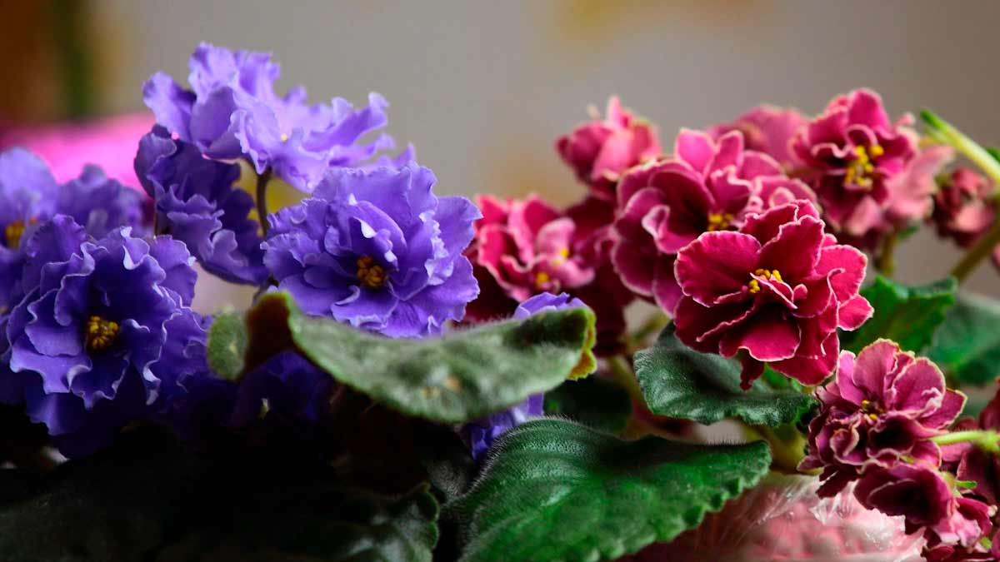

Фиа́лка (лат. Víola) — род растений семейства Фиалковые (Violaceae). Известно около пятисот (по некоторым данным — более семисот) видов, растущих преимущественно в Северном полушарии — в горах и в регионах с умеренным климатом.
Представители рода Фиалка встречаются в большинстве регионов мира с умеренным климатом; наибольшая концентрация видов наблюдается в Северной Америке, Андах и Японии. Многие виды являются характерными эндемичными растениями для южно-американских Анд; небольшое число видов встречается в субтропической Бразилии, в тропической и Южной Африке (в Капской области); в Австралии, Новой Зеландии, на Сандвичевых островах.
Фиалки — в большей части однолетние или многолетние травянистые растения, изредка полукустарники (виды, растущие в Андах), с попеременными, простыми или перисто-рассечёнными листьями, снабжёнными прилистниками. Диаграмма цветка Цветки одиночные, пазушные, обоеполые, зигоморфные (открытые и закрытые), околоцветник двойной: пять свободных остающихся чашелистиков с назад обращёнными придатками, пять свободных лепестков, из которых передний со шпорцем. Тычинок пять, они прижаты к пестику, нити у них короткие, передние две тычинки с мешковидным нектарником; связник расширяется над пыльниками в чешуйку. Пестик с верхней, одногнездой, многосемянной завязью, коротким столбиком и головчатым или пластинчатым рыльцем. Плод — коробочка, вскрывающаяся створками. Семена белковые, с центральным зародышем.
Культивирование декоративных фиалок Некоторые виды фиалок — излюбленные растения цветников. Распространены многочисленные сорта растения под названием Анютины глазки. Одни из них разводятся ради пахучих цветков, такова Viola odorata (с бесчисленными садовыми разновидностями, помесями и т. п., есть разновидности с простыми и махровыми цветками, есть и ремонтантные); другие — ради ярких цветков всевозможных цветов (одноцветных, пёстрых, светлых и тёмных), формы и размера, каковы Viola tricolor, Viola altaica, Viola lutea и помеси этих и других видов. Медицинское применение Трава фиалки трёхцветной применяется в медицине (лат. Herba Jacea, Herba Violae tricoloris) как мочегонное, противоаллергическое, жаропонижающее средство.
Примечание: материал взят из Википедии